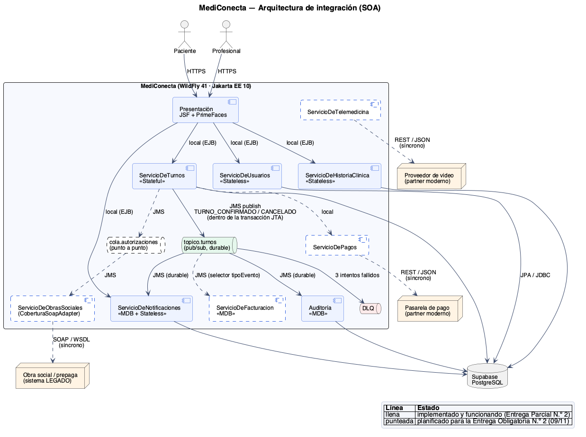
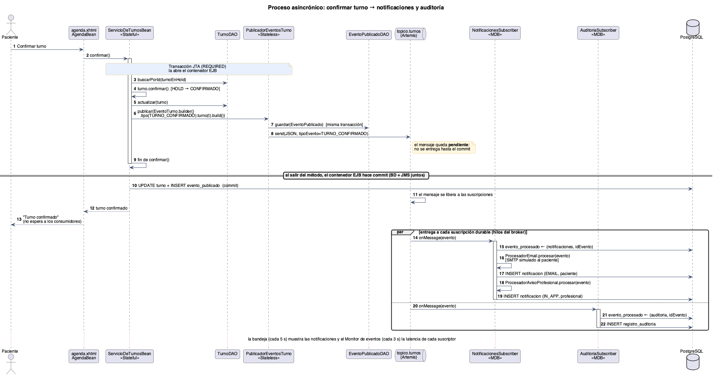
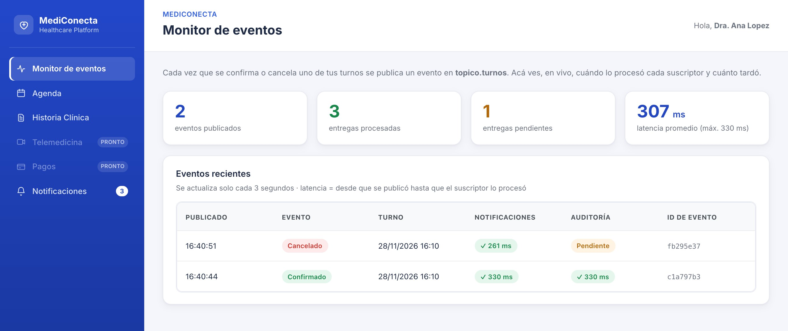
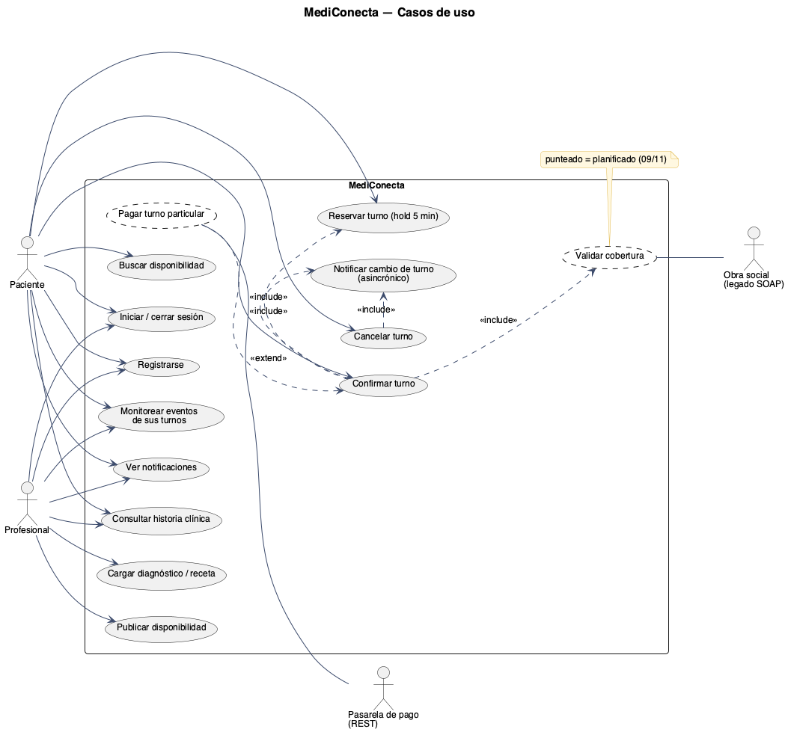

Este documento acompaña la Entrega Parcial N.º 2 de MediConecta, la plataforma que conecta pacientes con profesionales de la salud para gestionar turnos e historia clínica. La consigna de esta instancia pide tres cosas: definir la arquitectura de integración del sistema, clasificar de forma justificada cada integración externa en sincrónica o asincrónica, y poner en marcha al menos un proceso de negocio de punta a punta con mensajería asincrónica real y un broker configurado (Cátedra de Desarrollo de Aplicaciones II, 2026). El anexo de la consigna agrega, para esta misma fecha, la documentación funcional del sistema desde la perspectiva de cada actor.
Por eso el documento está dividido en dos partes. La primera es técnica y cubre la integración: qué componentes se comunican con qué, por qué canal y con qué garantías, incluyendo las pruebas que hicimos contra la base de datos real. La segunda es funcional y está escrita para que se entienda sin leer código: quiénes usan el sistema, qué puede hacer cada uno, cómo se comporta en cada caso y qué reglas respeta. Complementan este documento el manual de usuario, el documento maestro de diagramas, que explica en detalle los diez diagramas de la solución, y la guía de la presentación.
MediConecta está construida con componentes Jakarta EE desplegados en un único servidor de aplicaciones, WildFly 41, que además aloja el broker de mensajería ActiveMQ Artemis (Eclipse Foundation, 2022; Apache Software Foundation, s.f.). Hoy funcionan seis componentes de negocio: usuarios, turnos, historia clínica, notificaciones, auditoría y monitoreo. Los componentes de obras sociales, pagos, telemedicina y facturación están diseñados y se implementan en la Entrega Obligatoria N.º 2. La Figura 1 muestra cómo se conectan entre sí y con los tres sistemas externos del dominio.

Para decidir el canal de cada integración usamos una regla simple: si quien la inicia necesita la respuesta para poder seguir, la integración es sincrónica; si se trata de una consecuencia que puede procesarse después, o que le interesa a más de un componente, es asincrónica (Hohpe y Woolf, 2003). Dentro de las sincrónicas, el protocolo lo define el sistema externo: SOAP para el sistema legado de la obra social y REST para los partners modernos. La Tabla 1 aplica esa regla a cada caso.
| Integración | Tipo y canal | Justificación | Estado |
|---|---|---|---|
| Notificaciones de turnos | Asincrónica · tópico turnos | El paciente no necesita esperar a que se envíe un aviso para ver su turno confirmado. Si el envío falla, se reintenta sin deshacer la reserva. | Implementada |
| Auditoría de cambios | Asincrónica · mismo tópico | Es otro interesado en el mismo evento. El tópico permite sumarlo sin modificar el servicio de turnos. | Implementada |
| Facturación a obras sociales | Asincrónica · tópico con selector | Solo le interesan las confirmaciones y cancelaciones y puede procesarlas en lote. Filtra por la propiedad tipoEvento. | Planificada |
| Autorización de prestaciones | Asincrónica · cola punto a punto | Cada solicitud debe procesarse exactamente una vez; la cola admite consumidores en competencia para los picos de demanda. | Planificada |
| Validación de cobertura | Sincrónica · SOAP con WSDL | El sistema de la obra social es legado y solo expone SOAP. El paciente necesita saber en el momento si tiene cobertura. | Planificada |
| Pago de turnos particulares | Sincrónica · REST | La pasarela es un servicio moderno y el resultado del cobro se necesita antes de confirmar el turno. | Planificada |
| Videoconsulta | Sincrónica · REST | La sala se crea en el momento de iniciar la consulta. | Planificada |
El proceso implementado de punta a punta es la notificación de cambios en los turnos. Arranca cuando un paciente confirma o cancela un turno y termina cuando el profesional recibe el aviso en su bandeja y el cambio queda auditado. En el medio intervienen el servicio de turnos, el broker y dos componentes consumidores que no se conocen entre sí. La Figura 2 muestra la secuencia.

La decisión más importante del proceso es que la publicación del evento ocurre dentro de la misma transacción que actualiza el turno. El contexto JMS que usa el publicador está enlistado en la transacción JTA del componente que lo llama, así que el mensaje recién se entrega cuando la transacción se confirma; si hay un rollback, el mensaje se descarta (patrón Transactional Client; Hohpe y Woolf, 2003). En la misma transacción se registra el evento en la tabla evento_publicado, que después usa el monitor. Del lado de los consumidores, cada uno es un Message-Driven Bean con una suscripción durable al tópico, de modo que el broker le retiene los mensajes si está caído.
El evento viaja en formato JSON y contiene solo lo necesario para notificar: identificadores, fecha del turno y datos de contacto. Nunca incluye diagnósticos ni otros datos clínicos, porque la historia clínica es información sensible según la Ley 25.326 de Protección de los Datos Personales (2000) y la mensajería no la necesita.
El broker no es simulado: es el ActiveMQ Artemis embebido en WildFly, que solo está disponible en el perfil standalone-full.xml. La configuración se aplica con un script de la consola de administración incluido en el repositorio (wildfly/configurar-mensajeria.cli), que crea el tópico y define su política ante fallas. La Tabla 2 resume los recursos configurados.
| Recurso | Configuración |
|---|---|
| Tópico turnos | JNDI java:/jms/topic/turnos. Mensajes persistentes. |
| Suscripción notificaciones | Durable, clientId mediconecta-notificaciones, consumida por NotificacionesSubscriber. |
| Suscripción auditoria | Durable, clientId mediconecta-auditoria, consumida por AuditoriaSubscriber. |
| Política de reintentos | Hasta 3 entregas, con 5 segundos entre cada una (address-setting sobre jms.topic.turnos). |
| Cola de mensajes fallidos | jms.queue.DLQ: recibe los mensajes que fallan tres veces. Los vencidos van a jms.queue.ExpiryQueue. |
Un proceso asincrónico tiene que seguir siendo correcto cuando algo sale mal. Diseñamos cuatro garantías y las probamos todas contra la base de datos real en Supabase, además de dos pruebas automáticas que recorren la aplicación con un navegador. La Tabla 3 resume qué se probó y qué resultado se obtuvo.
| Escenario | Patrón que lo cubre | Resultado observado |
|---|---|---|
| Confirmar y cancelar un turno | Publish-Subscribe Channel | Cada evento llegó a los dos suscriptores: 2 notificaciones y 1 registro de auditoría por evento, procesados en unos 250 a 330 ms. |
| Falla después de publicar, antes del commit | Transactional Client | La transacción se revirtió y el mensaje no se entregó: 0 notificaciones y 0 registros de auditoría. |
| El mismo evento entregado dos veces | Idempotent Receiver | Cada suscriptor lo procesó una sola vez; la segunda copia se descartó. |
| Suscriptor detenido y reinicio completo del servidor | Durable Subscriber | El broker retuvo 1 mensaje; al reiniciar WildFly se procesó sin pérdida. |
| Mensaje que no se puede procesar | Dead Letter Channel | Tres intentos a las 15:44:57, 15:45:02 y 15:45:07 y luego traslado a la DLQ, sin bloquear al resto. |
| Recorrido completo con navegador | — | 14 verificaciones correctas (pruebas/prueba_e2e.py) y 7 sobre el monitor, con el suscriptor frenado desde la consola (pruebas/prueba_monitor.py). |
Las pruebas también sirvieron para encontrar problemas que no eran de la mensajería. Las páginas tardaban unos 3,4 segundos en cargar porque cada request hacía alrededor de treinta consultas a la base; con memoización por request el tiempo bajó a 0,8 segundos. Además corregimos un error que mostraba una página “Unauthorized” ante una contraseña incorrecta, el registro que aceptaba campos vacíos y la agenda que ofrecía horarios ya vencidos. Por último, adaptamos la interfaz a tablet y celular, como exige el anexo: en pantallas chicas el menú lateral pasa a ser una barra superior desplazable y las tablas se desplazan dentro de su tarjeta, sin desbordar la página.
Para que el proceso asincrónico se pueda observar sin abrir los logs del servidor, agregamos una pantalla, el Monitor de eventos (Figura 3). Para cada evento de los turnos del usuario muestra cuándo se publicó y, por cada suscriptor, si ya lo procesó y con qué latencia, o si lo tiene pendiente. Se alimenta del cruce entre evento_publicado y evento_procesado, y se actualiza solo cada tres segundos.

El monitor también aplica seguridad en dos niveles. La anotación @RolesAllowed restringe el acceso a pacientes y profesionales (seguridad declarativa), y el servicio toma el usuario del principal autenticado en lugar de recibirlo como parámetro, de modo que cada uno ve solo los eventos de sus propios turnos (seguridad programática por titularidad). Los datos viajan a la vista como objetos de transferencia y no como entidades (Alur et al., 2003).
Esta parte describe el comportamiento esperado de MediConecta desde la perspectiva de quienes la usan, como pide el anexo de la consigna. Primero se presentan los actores, después los casos de uso con sus flujos, las historias de usuario con sus criterios de aceptación y, por último, las reglas de negocio y las limitaciones conocidas. Los casos de uso se describen con la plantilla habitual de actor, precondiciones, flujo principal, flujos alternativos y postcondición, y cada uno indica si ya está implementado (Cockburn, 2001).
| Actor | Tipo | Qué busca en MediConecta |
|---|---|---|
| Paciente | Persona | Encontrar un horario con un profesional, reservarlo sin que se lo saquen mientras decide, enterarse de los cambios y consultar su historia clínica. |
| Profesional de la salud | Persona | Publicar sus horarios, saber cuándo un paciente confirma o cancela y registrar diagnósticos y recetas. |
| Administrador de clínica | Persona | Gestionar agendas y turnos de varios profesionales. Previsto en la consigna; todavía no tiene diseño ni implementación. |
| Obra social o prepaga | Sistema externo legado | Recibir consultas de cobertura y solicitudes de autorización (SOAP). |
| Pasarela de pago | Sistema externo moderno | Procesar el cobro de turnos particulares (REST). |
| Proveedor de videoconsulta | Sistema externo moderno | Crear y gestionar las salas de telemedicina (REST). |
La Figura 4 muestra el diagrama de casos de uso. Debajo se especifican los doce casos implementados y, de forma resumida, los dos planificados que ya tienen definido su canal de integración.

| Actor | Paciente o profesional |
| Estado | Implementado |
| Precondiciones | La persona no tiene una cuenta con ese email. |
| Flujo principal |
|
| Flujos alternativos | 5a. Falta un dato obligatorio: el sistema indica cuál (“Completá tu nombre”, “Completá tu email”, “Elegí una contraseña”) y no crea la cuenta. 5b. El email ya existe: el sistema informa “El email … ya está registrado” y no crea la cuenta. |
| Postcondición | Existe una cuenta nueva con el rol elegido. |
| Actor | Paciente o profesional |
| Estado | Implementado |
| Precondiciones | La persona tiene una cuenta. |
| Flujo principal |
|
| Flujos alternativos | 2a. Credenciales incorrectas: el sistema muestra “Credenciales inválidas” sin indicar cuál dato falló. Sin sesión, cualquier intento de abrir una página interna redirige a la pantalla de inicio. |
| Postcondición | El usuario queda autenticado con su rol, o la sesión queda cerrada. |
| Actor | Profesional |
| Estado | Implementado |
| Precondiciones | El profesional inició sesión. |
| Flujo principal |
|
| Flujos alternativos | 1a. El formato de la fecha no es válido: el sistema rechaza el valor y no crea el turno. Si quien intenta publicar no tiene el rol de profesional, el servicio rechaza la operación. |
| Postcondición | El horario aparece en la búsqueda de los pacientes. |
| Actor | Paciente |
| Estado | Implementado |
| Precondiciones | El paciente inició sesión. |
| Flujo principal |
|
| Flujos alternativos | 3a. El profesional no tiene horarios disponibles a futuro: la lista queda vacía. |
| Postcondición | El paciente ve los horarios que puede reservar. |
| Actor | Paciente |
| Estado | Implementado |
| Precondiciones | El paciente buscó la disponibilidad de un profesional (CU-04). El turno está disponible. |
| Flujo principal |
|
| Flujos alternativos | 2a. Otro paciente lo reservó antes: el sistema informa “El turno ya no está disponible.” 2b. El paciente ya tiene otro turno retenido: el sistema informa “Ya existe un turno en hold en esta conversación.” 3a. Pasan 5 minutos sin confirmación: el contenedor libera el turno, que vuelve a estar disponible. |
| Postcondición | El turno queda retenido a nombre del paciente. |
| Actor | Paciente |
| Estado | Implementado |
| Precondiciones | El paciente tiene un turno retenido (CU-05). |
| Flujo principal |
|
| Flujos alternativos | 1a. El plazo de 5 minutos venció: el sistema informa “No hay ningún turno en hold para confirmar.” 2a. Falla el guardado: la transacción se revierte y el evento no se publica. |
| Postcondición | El turno está confirmado y el cambio quedó publicado. |
| Actor | Paciente |
| Estado | Implementado |
| Precondiciones | El paciente tiene un turno confirmado propio. |
| Flujo principal |
|
| Flujos alternativos | 2a. El turno no existe, no está confirmado o es de otro paciente: el sistema informa “El turno no existe, no está confirmado o no te pertenece.” |
| Postcondición | El horario queda disponible para otros pacientes y el cambio quedó publicado. |
| Actor | Sistema (disparado por CU-06 y CU-07) |
| Estado | Implementado |
| Precondiciones | Se confirmó o canceló un turno y la transacción se confirmó. |
| Flujo principal |
|
| Flujos alternativos | 2a. El evento ya fue procesado por ese componente: se descarta sin efectos. 1a. Un componente está detenido: el broker retiene el mensaje y lo entrega cuando vuelve. 3a. El procesamiento falla: el broker reintenta tres veces, con 5 segundos entre intentos, y después envía el mensaje a la cola de mensajes fallidos. |
| Postcondición | Ambas partes tienen su aviso y el cambio quedó auditado. |
| Actor | Paciente o profesional |
| Estado | Implementado |
| Precondiciones | El usuario inició sesión. |
| Flujo principal |
|
| Flujos alternativos | 2a. No hay avisos: el sistema muestra “Todavía no tenés notificaciones.” |
| Postcondición | Los avisos quedan marcados como leídos, si así lo eligió. |
| Actor | Paciente o profesional |
| Estado | Implementado |
| Precondiciones | El usuario inició sesión. |
| Flujo principal |
|
| Flujos alternativos | 3a. La historia no tiene entradas: el sistema muestra “Todavía no hay entradas registradas en esta historia clínica.” 2a. El profesional no tiene pacientes con turno confirmado: la lista de selección queda vacía. |
| Postcondición | Sin cambios en el sistema. |
| Actor | Profesional |
| Estado | Implementado |
| Precondiciones | El profesional abrió la historia de un paciente (CU-10). |
| Flujo principal |
|
| Flujos alternativos | Si quien intenta guardar no tiene el rol de profesional, el servicio rechaza la operación. |
| Postcondición | La entrada forma parte de la historia y el paciente la puede ver. |
| Actor | Paciente o profesional |
| Estado | Implementado |
| Precondiciones | El usuario inició sesión. |
| Flujo principal |
|
| Flujos alternativos | 3a. No hay eventos: el sistema invita a confirmar o cancelar un turno para verlos. 3b. Un suscriptor todavía no procesó el evento: la columna muestra “Pendiente” hasta que lo procese. |
| Postcondición | Sin cambios en el sistema. |
| Actores | Paciente; obra social (sistema legado) |
| Descripción | Al confirmar un turno, el sistema consulta por SOAP al sistema de la obra social si el paciente tiene cobertura para la prestación. Si el legado no responde, se aplica un circuito de protección y el turno queda con la cobertura pendiente de revalidación por cola. |
| Actores | Paciente; pasarela de pago |
| Descripción | Si el paciente no tiene cobertura, el sistema cobra el turno por REST a la pasarela antes de confirmarlo. Reservar, cobrar y confirmar forman un único flujo transaccional: si el cobro falla, la reserva se revierte. |
Las historias de usuario expresan las mismas funcionalidades desde el valor que le aportan a cada actor. Los criterios de aceptación están redactados en el formato dado, cuando, entonces, y son los que usamos para verificar el comportamiento, en buena parte de forma automática con las pruebas de navegador.
| ID | Actor | Historia | Criterios de aceptación |
|---|---|---|---|
| HU-01 | Paciente | Como paciente, quiero reservar un horario y tener unos minutos para confirmarlo, para que nadie me lo saque mientras decido. |
|
| HU-02 | Paciente | Como paciente, quiero confirmar mi turno y ver que quedó registrado, para tener la certeza de que me van a atender. |
|
| HU-03 | Paciente | Como paciente, quiero cancelar un turno al que no voy a poder ir, para liberar el horario. |
|
| HU-04 | Paciente | Como paciente, quiero ver solo horarios que todavía puedo usar, para no perder tiempo con turnos vencidos. |
|
| HU-05 | Paciente | Como paciente, quiero consultar mi historia clínica, para tener a mano mis diagnósticos y recetas. |
|
| HU-06 | Profesional | Como profesional, quiero publicar los horarios en que atiendo, para que los pacientes puedan reservarlos. |
|
| HU-07 | Profesional | Como profesional, quiero enterarme cuando un paciente confirma o cancela, sin tener que recargar la página. |
|
| HU-08 | Profesional | Como profesional, quiero registrar diagnósticos y recetas de mis pacientes, para llevar su historia clínica. |
|
| HU-09 | Paciente o profesional | Como usuario, quiero ver si el sistema ya procesó los avisos de mis turnos, para saber que no se perdió ninguno. |
|
| HU-10 | Paciente o profesional | Como usuario, quiero que el registro me avise si me falta un dato, para no crear una cuenta incompleta. |
|
| ID | Regla | Dónde se aplica |
|---|---|---|
| RN-01 | Un turno reservado queda retenido durante 5 minutos. Si no se confirma, vuelve a estar disponible. | EJB @Stateful con @StatefulTimeout y @PreDestroy |
| RN-02 | Un paciente puede tener un solo turno retenido a la vez dentro de su sesión. | ServicioDeTurnosBean.reservarHold |
| RN-03 | Solo se puede reservar un turno disponible y con fecha futura. | Servicio de turnos y TurnoDAO |
| RN-04 | Solo el paciente titular puede cancelar un turno, y solo si está confirmado. Al cancelarlo, el horario vuelve a estar disponible. | ServicioDeTurnosBean.cancelar |
| RN-05 | Cada email se puede registrar una sola vez. Nombre, email y contraseña son obligatorios. | Servicio de usuarios y formulario de registro |
| RN-06 | Las contraseñas se guardan con hash PBKDF2, nunca en texto plano. | Jakarta Security |
| RN-07 | Solo un profesional puede publicar disponibilidad y cargar entradas en una historia clínica. | @RolesAllowed("PROFESIONAL") |
| RN-08 | Las entradas de la historia clínica no se editan ni se eliminan. | No hay operación que lo permita |
| RN-09 | Toda confirmación o cancelación genera un evento; si la operación falla, el evento no se publica. | Transacción JTA compartida con el envío JMS |
| RN-10 | Un evento se procesa una sola vez por suscriptor, aunque el broker lo entregue más de una vez. | Tabla evento_procesado |
| RN-11 | Los eventos no contienen datos clínicos. | EventoTurno.Builder |
| RN-12 | Cada usuario ve solo los eventos de sus propios turnos. | ServicioDeMonitoreoBean (principal autenticado) |
Preferimos documentar lo que todavía falta antes que dejar que aparezca en una prueba. Del lado funcional, el profesional no tiene en su agenda una lista de los turnos que le confirmaron (los ve indirectamente en la historia clínica), la disponibilidad se publica de a un horario por vez, no existe la reprogramación de un turno ni la recuperación de contraseña, y el envío real de emails está simulado. Del lado técnico, la verificación de que un paciente solo acceda a su propia historia clínica se hace hoy en la capa de presentación; el servicio controla el rol pero todavía no la titularidad, y es la primera mejora de seguridad prevista.
Con esta entrega MediConecta dejó de ser un conjunto de componentes que se llaman directamente entre sí para tener su primer proceso de negocio desacoplado por mensajería. El cambio no se ve en la pantalla del paciente, que sigue siendo la misma, sino en todo lo que pasa después de confirmar un turno, y por eso sumamos el Monitor de eventos: para que ese comportamiento se pueda ver y verificar dentro de la propia aplicación.
La documentación funcional, por su parte, nos obligó a escribir con precisión reglas que hasta ahora estaban solo en el código, y en ese proceso encontramos y corregimos comportamientos incorrectos, como el registro sin datos y los horarios vencidos ofrecidos como disponibles. Para la Entrega Obligatoria N.º 2 quedan las integraciones sincrónicas, la cola punto a punto y un flujo transaccional de varios pasos, que ya figuran en la arquitectura de la Figura 1.
Alur, D., Crupi, J. y Malks, D. (2003). Core J2EE patterns: Best practices and design strategies (2.ª ed.). Prentice Hall.
Apache Software Foundation. (s.f.). ActiveMQ Artemis documentation. https://activemq.apache.org/components/artemis/documentation/
Cátedra de Desarrollo de Aplicaciones II. (2026). Trabajo práctico integrador: Consigna general y cronograma de entregas [Material de cátedra]. Universidad Argentina de la Empresa.
Cockburn, A. (2001). Writing effective use cases. Addison-Wesley.
Eclipse Foundation. (2022). Jakarta EE Platform 10. https://jakarta.ee/specifications/platform/10/
Hohpe, G. y Woolf, B. (2003). Enterprise integration patterns: Designing, building, and deploying messaging solutions. Addison-Wesley.
Ley 25.326 de Protección de los Datos Personales. (2000). Boletín Oficial de la República Argentina.
De acuerdo con la consigna del trabajo práctico (Cátedra de Desarrollo de Aplicaciones II, 2026), declaramos que en esta entrega usamos Claude, un asistente de inteligencia artificial generativa desarrollado por Anthropic, como herramienta de productividad: para generar el código base de la mensajería y del monitor de eventos, configurar el broker en WildFly, automatizar las pruebas de navegador, generar los diagramas a partir del código y redactar un primer borrador de este documento y del manual de usuario.
El grupo revisó el contenido contra el código y contra el comportamiento real de la aplicación. Cada integrante está en condiciones de explicar y defender cualquier parte del trabajo.